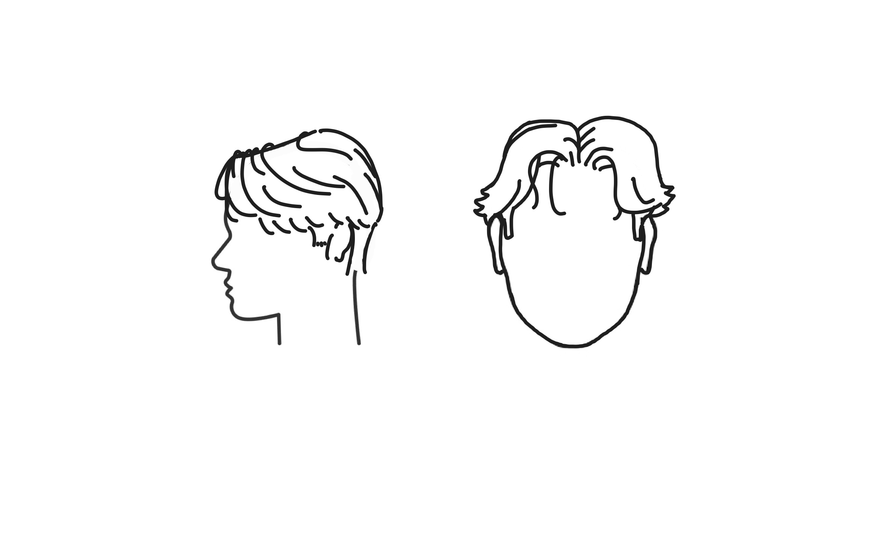
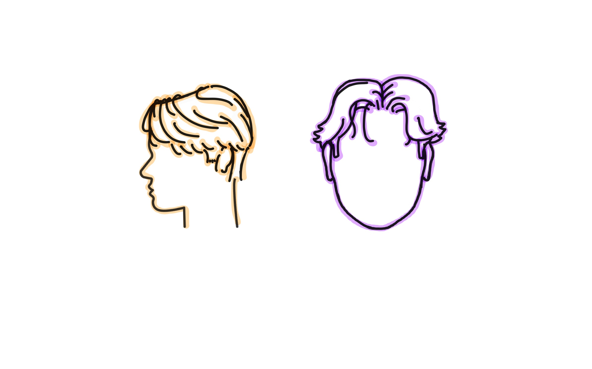
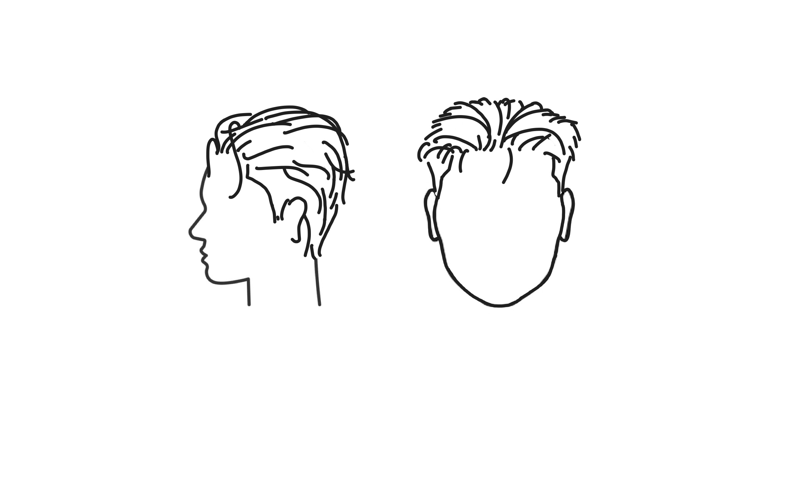
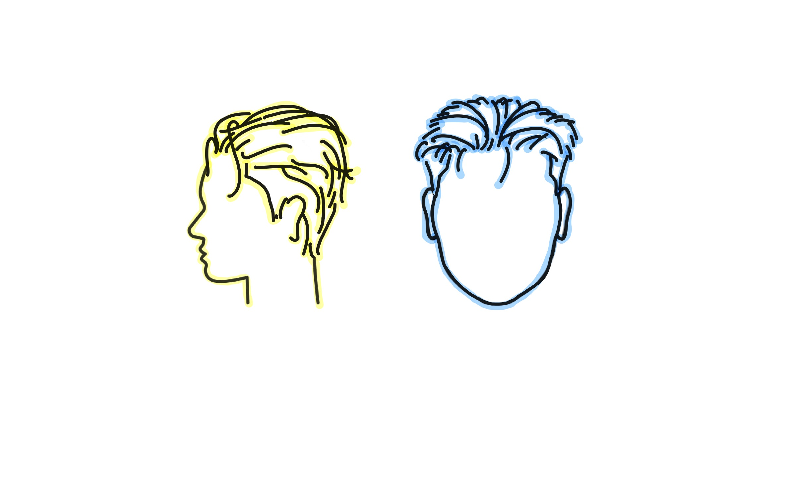

Middle Part
 Typically long hair parted in the middle with wavy locks down the sides. Commonly accompanied with curtain bangs.
Slick Back
 Simple, sleek look with straight hair pushed towards the back and a taper around the ears or neck.